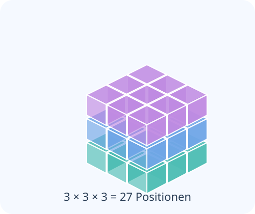

Relationale Wortmarke
Eigenständiges Signet als Gestaltungsvorschlag, keine wissenschaftliche Feldvisualisierung.
Einzelbild SVG öffnenGrafiken zur Nutzung in Fachartikeln, Taskkarten und Forschungs-Prompts. Die einzelnen SVG-Dateien können direkt verlinkt und auflösungsunabhängig skaliert werden. Die hier angebotenen Diagramme sind redaktionelle Illustrationen zu den hinterlegten Mermaid-Quelltexten.
Eigenständiges Signet als Gestaltungsvorschlag, keine wissenschaftliche Feldvisualisierung.
Einzelbild SVG öffnen
Drei Achsen und 27 mögliche Rollenadressen.
Einzelbild SVG öffnen
Die grafische Entwicklung aus wenigen Grundformen.
Einzelbild SVG öffnen
Mermaid-Struktur als eigenständiges SVG.
Einzelbild SVG öffnen
Generator, Parameter, Operator, Ergebnis und Rückprüfung.
Einzelbild SVG öffnenDie rote Mitmachgrafik dient ausschließlich als Gestaltungsvorlage für die Mitmachseite. Jede andere Fachseite erhält ihre eigene Akzentfarbe; Typografie, Kartenrhythmus, Bildunterschriften und Diagrammgrammatik bleiben gemeinsam.
Mermaid-Quellen · Designregeln · Bildquellen und Promptvorlagen
Wissen und wissenschaftliche Zusammenhänge sollen frei zugänglich sein. Wir freuen uns über Nutzung, Weitergabe, Verlinkung, Korrekturen und gemeinsame Weiterentwicklung. Für eigene Texte und Grafiken ist CC BY-SA 4.0 vorgesehen, für eigene Software GNU GPL v3.0-or-later und für geeignete eigene Forschungsmetadaten CC0. Maßgeblich bleibt die jeweilige Datei-Lizenz; bestehende Fremdrechte und frühere Veröffentlichungsbedingungen werden dadurch nicht überschrieben.
Verlinkte externe Quellen, Bibliotheken und Bilder gehören nicht automatisch zu unseren eigenen Werken. Ihre Rechte und die konkrete wissenschaftliche Herkunft sind in den jeweiligen Quellen-/Infoboxen zu prüfen.
Verantwortlich: Nils Sautter · Gransee · Kontakt@erlebNils.de. Die vollständige Anschrift für das Impressum ist noch zu ergänzen.
Impressum und vollständiges Repository-Dateiverzeichnis · Quellen- und Übergaberegister · GitHub